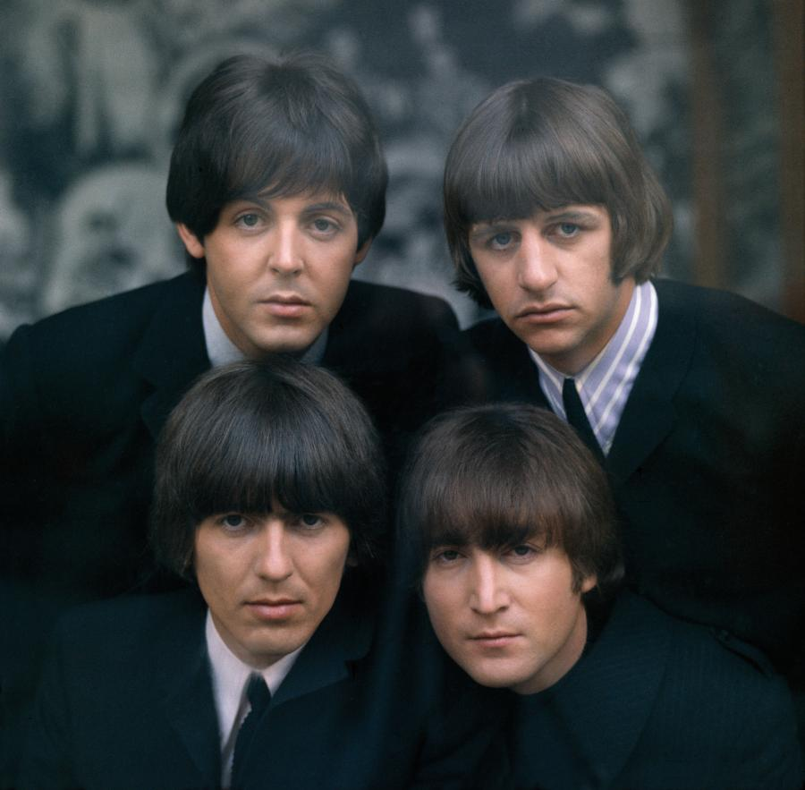
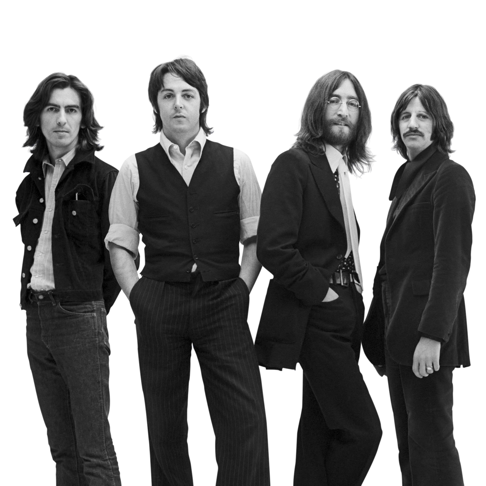
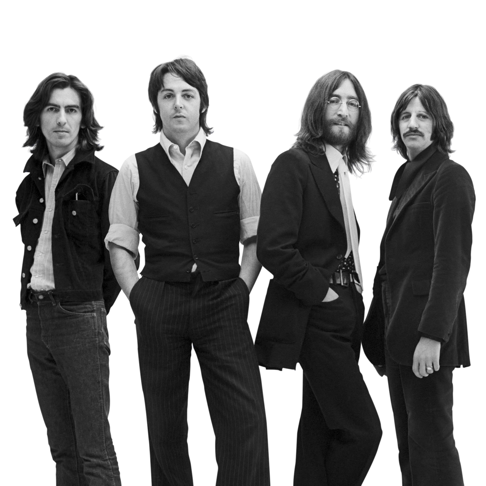

О группе
The Beatles (также группу называют «Ливерпульской четвёркой», Liverpool Four; отдельно участников ансамбля называют «битлами»; в английском языке также распространено упоминание группы как Fab Four — «Великолепная четвёрка») — британская рок-группа из Ливерпуля, основанная в 1960 году, в составе которой играли Джон Леннон, Пол Маккартни, Джордж Харрисон и Ринго Старр. Также в разное время в составе группы выступали Стюарт Сатклифф, Пит Бест и Джимми Никол. Большинство композиций The Beatles создано в соавторстве и подписано именами Джона Леннона и Пола Маккартни. Дискография группы включает 13 официальных студийных альбомов, изданных в 1963—1970 годах, и 211 песен.
Начав с подражания популярным звёздам американского рок-н-ролла 1950-х годов, The Beatles пришли к собственному оригинальному стилю, сценическому образу и звучанию. The Beatles оказали значительное влияние на рок-музыку и признаны одной из наиболее успешных групп XX века, как в творческих, так и в коммерческих достижениях. Многие известные рок-музыканты признают, что стали таковыми под влиянием песен The Beatles. С момента выпуска сингла «Please Please Me/Ask Me Why» в 1963 году группа начала восхождение к успеху, породив своим творчеством глобальное явление — битломанию. Четверо музыкантов стали первой британской группой, песни и альбомы которой завоевали популярность и первые места в хит-парадах США и стран Европы, и с неё началось всемирное признание британских коллективов, а также «ливерпульского» (мерсибит) звучания рок-музыки. Музыкантам группы и их продюсеру и звукорежиссёру Джорджу Мартину принадлежат новаторские разработки в использовании студийных возможностей звукозаписи, комбинирования различных музыкальных жанров, включая симфоническую, джазовую и психоделическую музыку, а также съёмок видеоклипов.
Журнал Rolling Stone поставил The Beatles на первое место в списке величайших исполнителей всех времён. В списке «500 величайших альбомов всех времён по версии журнала Rolling Stone» первое место занимает альбом Sgt. Pepper’s Lonely Hearts Club Band. Группа завоевала десять наград «Грэмми». Все четыре музыканта, в знак признания заслуг перед страной, награждены орденами Британской империи (MBE). По состоянию на 2001 год только в США было продано свыше 163 миллионов экземпляров альбомов и фильмов группы. Общий объём продаж единиц медиаконтента (диски и кассеты), связанного с группой, на этот момент превысил один миллиард экземпляров.
The Beatles прекратили совместную работу в 1970 году, хотя уже по меньшей мере с 1967 года Пол и Джон вели собственные проекты. После распада каждый из музыкантов продолжил сольную карьеру. В 1980 году возле своего дома в Нью-Йорке был убит Джон Леннон, в 2001 году от рака скончался Джордж Харрисон. Пол Маккартни и Ринго Старр продолжают заниматься творчеством, выступают с концертами и создают новые музыкальные произведения.
-
1 место - «A Day in the Life»
-
2 место - «I Want to Hold Your Hand»
-
3 место - «Strawberry Fields Forever»
-
4 место - «Yesterday»
-
5 место - «In My Life»
-
6 место - «Something»
-
7 место - «Hey Jude»
-
8 место - «Let It Be»
-
9 место - «Come Together»
-
10 место - «While My Guitar Gently Weeps»
Топ 10 песен по версии журнала "The Rolling Stone"
Галерея
 


Топ 5 альбомов
5
«Rubber Soul» (1965)
Переходная запись от ранних The Beatles к поздним: на обложке появляются пузатые психоделические буквы, в саунде — индийский ситар («Norwegian Wood») и электропиано («In My Life»), в текстах — неприкрытый сарказм («Drive My Car») и французский язык («Michelle»). Разнообразие звуков и творческих подходов сначала сбивает с толку: даже самые яркие отрывки, принадлежащие перу одного и того же музыканта (к примеру, ленноновские «Nowhere Man» и «Girl»), кажутся фрагментами двух разных альбомов. Впрочем, отсутствие целостности — несправедливая претензия к поп-музыке 1965 года; в ее контексте представление об альбоме как о едином произведении искусства возникнет позже. Единственный объективный недостаток «Rubber Soul» — это то, что на общем фоне несколько меркнут некоторые консервативно звучащие композиции, словно бы опоздавшие на пару лет: «What Goes On» с вокалом Ринго, «Run for Your Life» или «Wait».
4
«A Hard Day’s Night» (1964)
Высшая точка развития ранних The Beatles: среди тринадцати находчивых, остроумных, талантливых, простых, лаконичных, вдохновенных и неотразимых песен — ни одной кавер-версии. Леннону и Маккартни безупречно удаются и энергичные боевики (например, «I Should Have Known Better» и «Can’t Buy Me Love»), и нежные баллады («If I Fell» и «And I Love Her»). Помимо общепризнанных хитов, в альбоме есть и другие менее известные, но не менее сногсшибательные треки: например, минорная маккартниевская «Things We Said Today» или странно синкопированная «I’m Happy Just to Dance with You» с вокалом Джорджа Харрисона.
3
«Sgt. Pepper’s Lonely Hearts Club Band» (1967)

То, что одна из самых знаменитых пластинок в истории популярной музыки занимает в этом списке лишь третье место — яркое свидетельство битловской исключительности; впрочем, по справедливости, первые три позиции в рейтинге кажутся абсолютно взаимозаменяемыми. «Сержант», несмотря на отсутствие внятной сюжетной линии ставший одним из первых концептуальных альбомов, — памятник неуемной креативности психоделической эпохи. Почти безупречный набор песен максимально отражает дух эпохи — при этом они и сегодня звучат свежо и актуально, а обложка произвела революцию в дизайне музыкальных записей. Пожалуй, вторая сторона несколько уступает первой — зато венчает пластинку удивительная «A Day in the Life», одна из лучших песен The Beatles и пример почти телепатического взаимопонимания, которое было у Леннона, Маккартни и примкнувшего к ним продюсера Джорджа Мартина в лучшие годы.
2
«Abbey Road» (1969)
Именно «Abbey Road», а не вышедший позже «Let It Be», в действительности был лебединой песней группы — и в то же время, по воспоминаниям всех участников, в процессе его записи в студии снова, как раньше, стала ощущаться неповторимая битловская химия. Несмотря на наличие многочастной сюиты на второй стороне пластинки (компилятивный арт-роковый шедевр Леннона — Маккартни), первая часть альбома, возможно, даже ярче: свои лучшие песни в составе The Beatles сочинили Джордж и даже Ринго («Something» и «Octopus’s Garden»), Пол сорвал связки в «Oh! Darling», а Джон написал тревожный открывающий трек «Come Together», «Because» с ее сокрушительным многоголосием и удивительную «I Want You (She’s So Heavy)», один из самых захватывающих битловских экспериментов за всю карьеру.
1
«Revolver» (1966)

Запись, которая, как говорят рэперы, «перевернула игру»: после нее поп-музыка уже не была прежней. Тематически The Beatles замахиваются здесь на все на свете — от социально-экономических рассуждений («Taxman») до описания кислотных трипов («She Said She Said»), от наивных детских песенок («Yellow Submarine») до почти джойсовского потока сознания («Tomorrow Never Knows»). Но еще больше альбом поражает музыкально: валторны и струнные квартеты, психоделические саунд-коллажи и гитарные соло, пущенные задом наперед, но в то же время и изрядная порция жесткого мускулистого рока — трудно поверить, что со времен «Please Please Me» прошло всего три года. Кроме того, в составе The Beatles отныне целых три полностью сформировавшихся композитора: к Джону и Полу присоединяется Джордж с «Love You To», «Taxman» и блистательной, трагически недооцененной «I Want to Tell You».